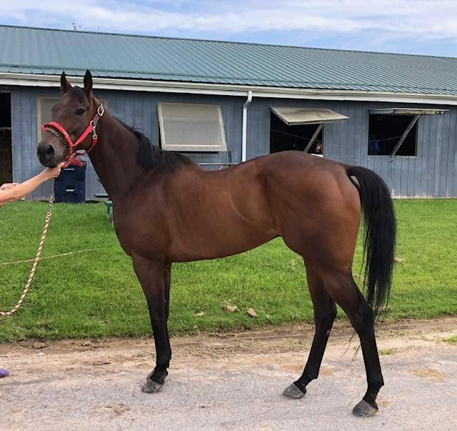
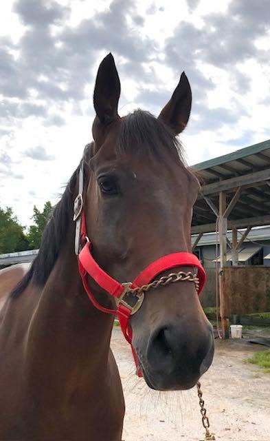
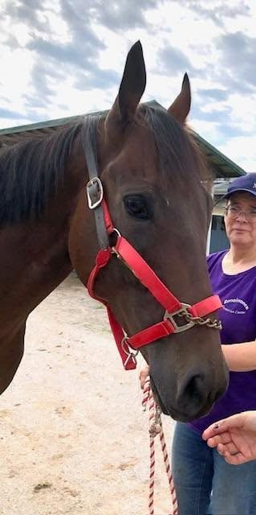
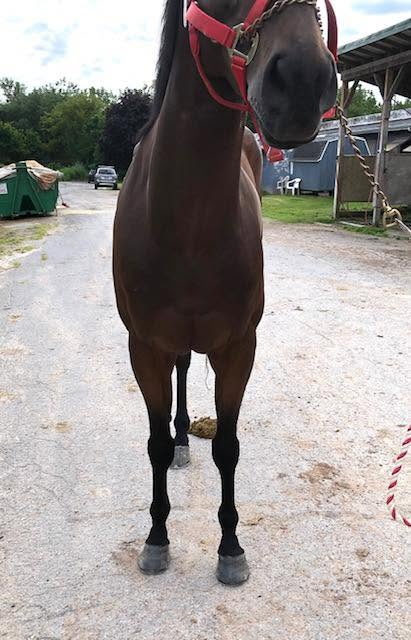
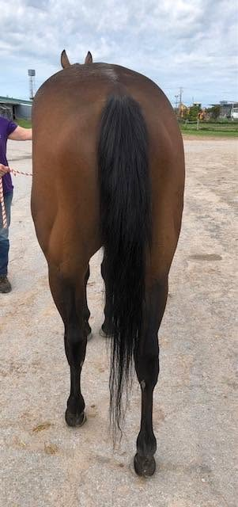

SWAY THE JURY 2022, 15.3 h., dark bay gelding
This sweet, kind boy is quiet enough that your granny could jog him. Literally. When we got to his barn, we couldn't find his trainer, so we placed a call. He'd had to leave for the day, but said, “take him out yourself for photos and video because he's super sweet and quiet”. So, we did. In his video, our volunteer is a senior-citizen ammy who found him to be a complete gentleman, super willing, polite, and quietly matching her steps on a loose lead. Even though there were distractions on the backside during our session and he was a bit unsure about what we wanted; we found him to be agreeable, attentive, and really trying to do whatever we asked (except drop his head and stretch his neck forward for optimal photos- he seemed immune to our peppermint charms). We thought he was a cute mover with relaxed swinging walk and a springy, rhythmic jog. We liked his intelligent face and kind eye. He does have a slight sway back- our volunteers all have anecdotes about sway back horses that they've known- and many of them were great jumpers! For you, it may mean you will have to be diligent about saddle fit (which, in truth, shouldn't we be with all our horses?). Correct training and nutrition to build topline muscle should also help make this less noticeable.
We were told by his trainer that he is quiet, good to handle, easy to work with, and has no stable vices. That's exactly what we observed. His trainer says that he is 'perfectly sound'; we noticed clean, tight legs. But he said racing is “just not his thing”. He's great during workouts/ gallops, but in the speed and tension of a race, his palate (not his flap) tends to flip over shutting off his airway. We were told that he does not make noise and that this issue should not affect a second career in any other sport (with the possible exception of the highest echelons of 3-day eventing). He is by Vekoma out of a Union Rags mare with Candy Ride and Speightstown also appearing in his pedigree.
He's a young, kind, no-nonsense horse who is easy to handle, lightly raced (11 starts), and tries hard to please. With a little time and proper training, he could blossom into a much-loved, all-round guy; take him trail riding, do a hunter pace, or let him pack you and/or your kids around local shows. The jury is in… this guy is a good egg!
Please note that references will be required and checked prior to being able to purchase this horse. Please see our FB post for more information.
Price: $1,500 negotiable
Contact: Joe Marino (315) 521-0583




